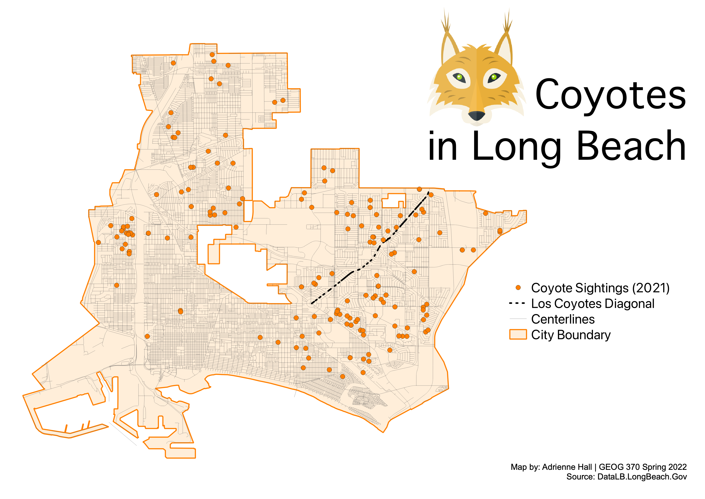

In this assignment, students are asked to create a basic thematic map using QGIS. Students learn to identify sources of geographic information, understand data types, manage layers in a GIS platform, and basic principles of cartography. The example map below displays locations of coyote sightings in Long Beach during 2021 from the city's open data portal.
